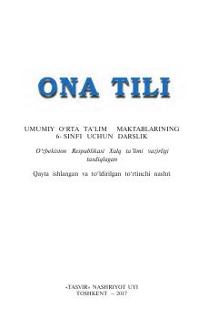

OT6-sinf o'quvchilari uchun ona tili fani bo'yicha rasmiy darslik.
Ushbu darslik umumiy o'rta ta'lim maktablarining 6-sinf o'quvchilari uchun mo'ljallangan bo'lib, o'zbek tilining fonetika, leksika va boshqa bo'limlarini chuqur o'rgatadi. Kitobda turli mashqlar, matnlar va qoidalar keltirilgan bo'lib, o'quvchilarning savodxonligini oshirishga xizmat qiladi.